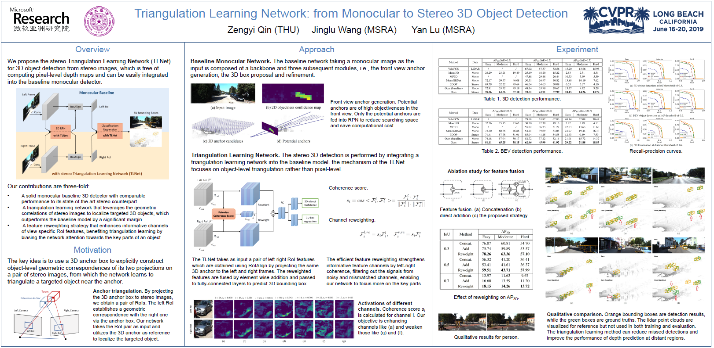

Triangulation Learning Network: from Monocular to Stereo 3D Object Detection
Zengyi Qin1, Jinglu Wang2, Yan Lu2
1Tsinghua University 2Microsoft Research Asia
Computer Vision and Pattern Recognition (CVPR) 2019
Abstract
In this paper, we study the problem of 3D object detection from stereo images, in which the key challenge is how to effectively utilize stereo information. Different from previous methods using pixel-level depth maps, we propose employing 3D anchors to explicitly construct object-level correspondences between the regions of interest in stereo images, from which the deep neural network learns to detect and triangulate the targeted object in 3D space. We also introduce a cost-efficient channel reweighting strategy that enhances representational features and weakens noisy signals to facilitate the learning process. All of these are flexibly integrated into a solid baseline detector that uses monocular images. We demonstrate that both the monocular baseline and the stereo triangulation learning network outperform the prior state-of-the-arts in 3D object detection and localization on the challenging KITTI dataset.
Paper

|
►TLNet.pdf, 7.5 MB, [arXiv]
Zengyi Qin, Jinglu Wang, Yan Lu |
Video Demo
Poster
|  |
►TLNet_poster.pdf, 3.11 MB |